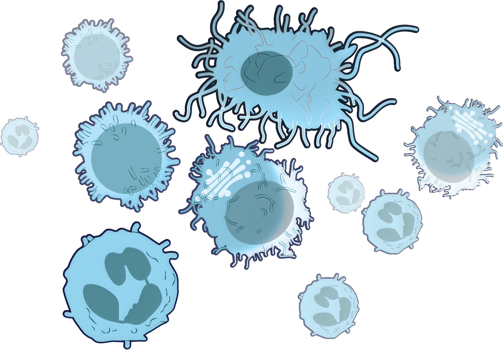

What Is An HRA?
What Is An HRA? Squiggy's Identity Crisis!
Squiggy's Identity Crisis! Something's NOT Registering!
Something's NOT Registering! Data Detangle
Data Detangle Know Your Body Buddies
Know Your Body Buddies Immunosenescence
Immunosenescence App Library
App LibraryThe immune system is a complex network of cells, tissues, organs, and the substances they make. It helps the body fight infections and other diseases. As we age, our immune system function becomes impaired. Our bodies have a harder time fighting off infections, controlling malignancies, and maintaining immune tolerance. As we age, our immune system function becomes impaired. Our bodies have a harder time fighting off infections, controlling malignancies, and maintaining immune tolerance. This age-related deficiency in immune system function is called immunosenescence.

A key contributor to the immune system’s deterioration is cell senescence. This occurs when stress or damage to the cell causes it to exit the cell cycle. In this state of cell cycle arrest, the cell stops dividing but remains metabolically active. The senescent cell secretes a combination of bioactive molecules known as SASP—the senescence-associated secretory phenotype. This occurs when stress or damage to the cell causes it to exit the cell cycle.

In this state of cell cycle arrest, the cell stops dividing but remains metabolically active. The senescent cell secretes a combination of bioactive molecules known as SASP—the senescence-associated secretory phenotype. Cell senescence has some very important benefits for our health. It aids in embryo development, helps our bodies respond to injury, and works to keep cancer cells from replicating.